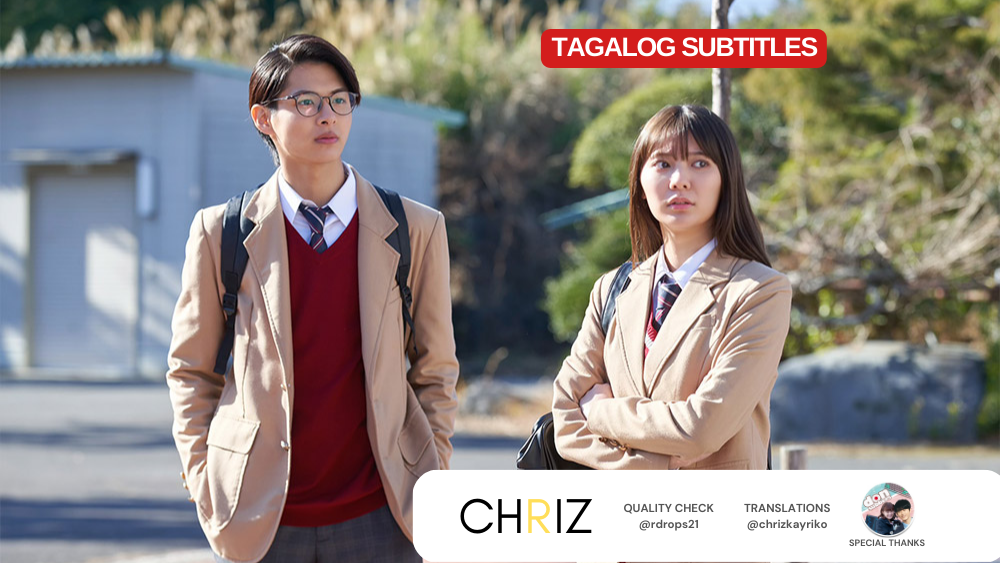
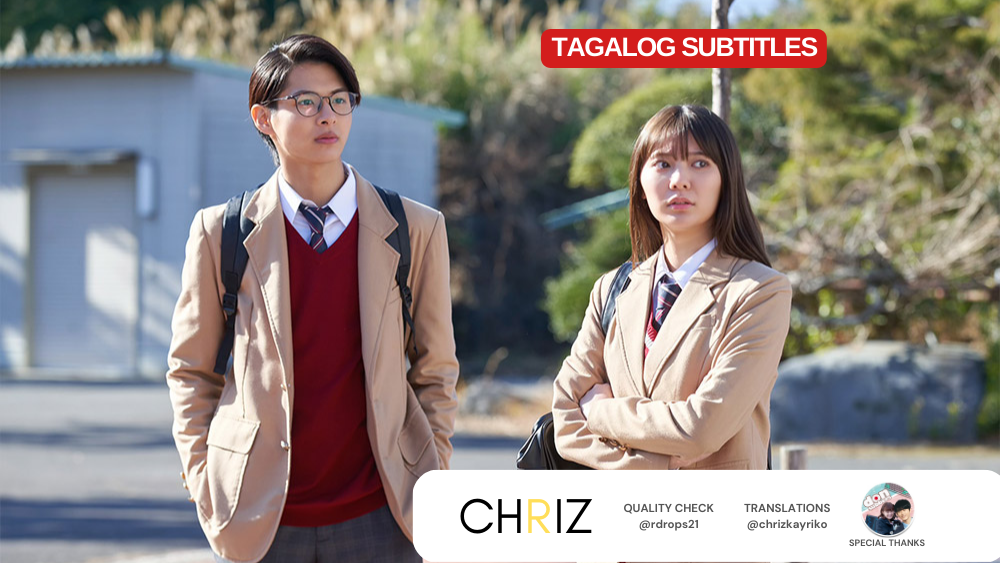

STORY #1
 


Taong 2050,
bawal na ang sexual activities sa buong Japan. Ito ay batas na sa bansa at mahigpit na ipinatutupad ng SETORI. Ngunit paano pipigilan ng isang teenager na si #HikaruInuta ang ganitong klase ng tukso?